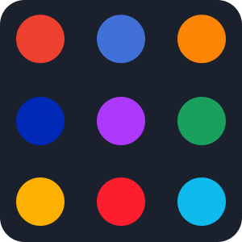

The browser prompter for macOS


Multi-Default
After clicking a link, use the picker to choose the correct browser for the job.

Favourite
Quickly open your usual browser using the SPACE key.
URL Bar
Make sure the website you are about to open is the one you are expecting.
See it in action
Browserosaurus is FREE. However, please consider a small donation. Doing so will help me cover the cost of future development and the fee charged by Apple to release software on their operating system.
Download Browserosaurus v10.3.0 for Mac

FAQ
Why does Browserosaurus ask to be set as my default browser?
This is required for Browserosaurus to know that a link has been
clicked. You can change this at any time by going to
System Preferences > General > Default web browser
and (de)selecting Browserosaurus.
How do I set my favourite browser?
A favourite browser will open when the SPACE key is pressed, and is therefore an easier target to hit. You can set your favourite by clicking on the menubar icon to open Browserosaurus and using the ⭐️ menu.
The picker window was very slow to display.
The app needs to be running in the background for the picker window to show immediately. You can confirm Browserosaurus is running by looking for the "B" icon in the menubar. If you have not set Browserosaurus to load on startup, it can take a few seconds until it is available. Each subsequently clicked link will open the picker window promptly.
I'm clicking links in my browser but Browserosaurus does not show.
Only links clicked outside of browsers will open Browserosaurus. This is by design.
Does Browserosaurus collect any of my data and send it to an online service?
No.
Not even the link I click?
Nope. The only outgoing call Browserosaurus makes is to check for an update.
I installed or removed a browser but I'm not seeing this updated in the picker window.
Browserosaurus checks for installed browsers when it is loaded. Please click the "B" icon in the menubar to open Browserosaurus, and click the quit button in the bottom-right of the window. Start Browserosaurus again and you will see the changes.
I have a browser that's not shown in the picker window, even after restarting Browserosaurus.
Browserosaurus operates on a whitelist basis. If you would like a browser added, please raise an issue.
I have a question that is not answered here.
If you have any issues or feature requests please raise an issue on the GitHub repository.